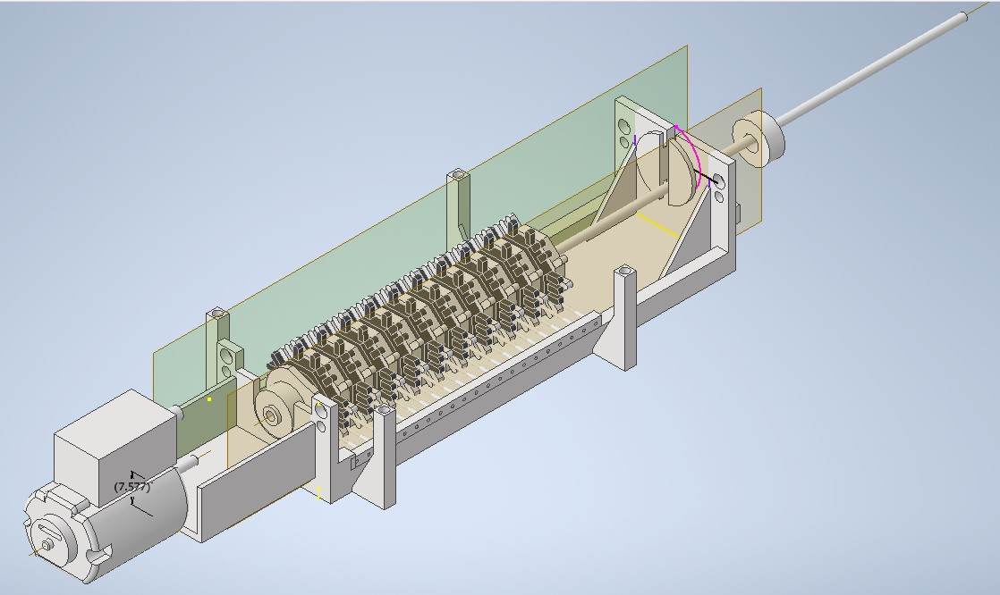
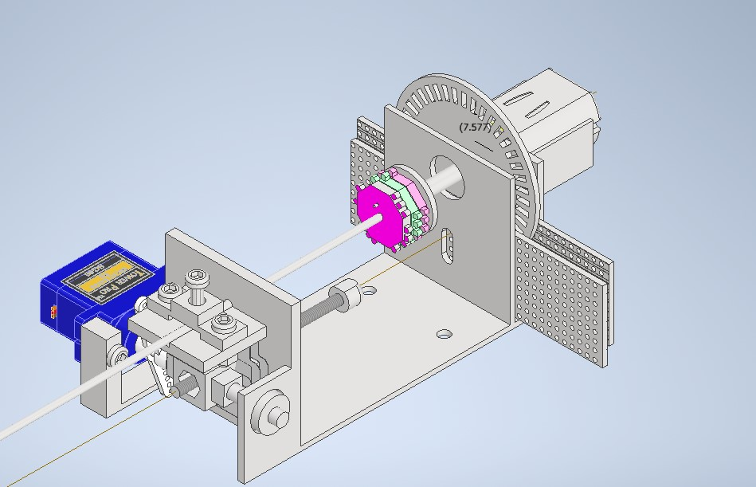

Problem
Braille literacy among blind people is low due to limited educational resources. Fundamentally, printed braille is expensive and cannot access the internet. So, Blind people default to Audio tools. Audio tools are convenient, but don't translate into work. Empirically, 90% of those who learn braille get employed, compared to less than 20% of braille illiterate. Unfortunately, braille literacy has been declining.
The Pitch
Instead of using complex actuation, braille can be refreshed using a disk mechanism that is ultra low part, and uses off the shelf toy dc motors. The braille display can have massive character counts, Be dirt cheap to manufacture leveraging mature existing manufacturing, empowering blind people.
Hardware Development
The hardware side of the Startup is fundamentally about meeting the tight tolerances with limited 3d printing capability. Through iteration, I’ve improved the design to be more and more robust and to meet consistent spec.


What I built
Currently, I have a Demo for the main mechanism, ready to be scaled into a usable prototype. The mechanical plant, of the demo, I've Completed Since October 2025, and since, Development has been focused on control of the mechanism.
Next Steps
Complete control of the Demo, Then scale demo into a usable prototype.
Demo Video
Watch the project in action on YouTube.